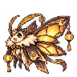

No.010
トモリガ
灯 進化形
四枚の灯籠羽が、眠る森を照らす。道に迷った者の上を旋回する。
基本データ
| 図鑑番号 | No.010 |
|---|---|
| タイプ | 灯タイプ |
| 進化 | チラリからLv.8で進化 |
| 入手方法 | 吹き抜けの大峡谷（Lv.68〜71）、隕石孔の底（Lv.88〜91）の草むらに出現。 |
Lv.50の能力値
| 体力 | 283 | |
|---|---|---|
| 物理攻撃 | 174 | |
| 物理防御 | 116 | |
| 特殊攻撃 | 173 | |
| 特殊防御 | 120 | |
| 素早さ | 123 | |
| 命中 | 96 | |
| 回避 | 96 |
冒険中の能力値はレベルに応じて上がります。オンライン対戦の通常レンタルはLv.50で統一されます。
覚える技
| 技 | タイプ | 分類 | 威力 | 命中 | PP | 効果 |
|---|---|---|---|---|---|---|
| 暁のつむじ | 灯 | 特殊 | 36 | 92 | 15 | あたたかな火の渦をつくる。 |
| 空渡り | 風 | 特殊 | 34 | 94 | 15 | 上空から素早く舞い降りる。 |
| ぬくもり | 灯 | 回復 | — | — | 10 | 自分の最大体力の30%を回復。 PPを1消費する。 |
| 熾火の刻印 | 灯 | 物理 | 30 | 95 | 20 | ゆっくり燃える光が守りを貫く。 |
進化の系譜

タイプ相性
灯タイプの技は芽タイプに強く（1.5倍）、潮タイプの技を受けると効果が大きくなります。同じタイプの技を使うと威力が1.15倍になります。